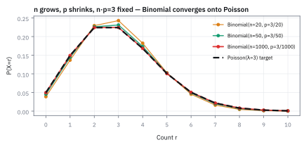
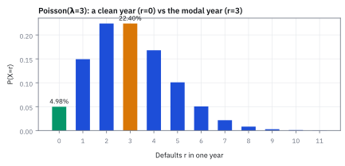
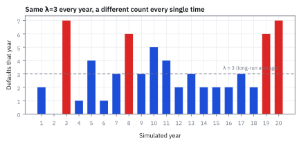
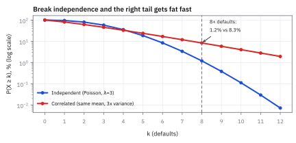
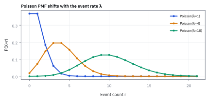
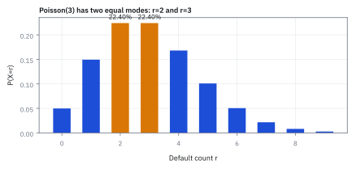

1.6 The Poisson Distribution
นับเหตุการณ์ที่โผล่มาทีละครั้งในช่วงเวลาหนึ่ง
หน้าร้านมีคนกดกริ่งเฉลี่ยชั่วโมงละ 2 ครั้ง วันนี้เงียบสนิทไปหนึ่งชั่วโมงเต็ม คุณควรโทรเรียกช่างมาซ่อมกริ่งไหม?
เฉลย: ยังไม่ต้อง ชั่วโมงที่เงียบสนิทเกิดได้ราว 13.5% หรือราวหนึ่งชั่วโมงในเจ็ดชั่วโมง ถ้าร้านเปิดวันละแปดชั่วโมง แทบทุกวันจะมีชั่วโมงเงียบให้เห็น ขั้นที่ 1 จะหาเลข 13.5% นี้ด้วยการหั่นชั่วโมงเป็นชิ้นเล็ก ๆ
เครื่องมือของหัวข้อนี้ชื่อ Poisson distribution ใช้นับเหตุการณ์ที่โผล่มาทีละครั้งเมื่อรู้แค่อัตราเฉลี่ย เช่นคนกดกริ่งต่อชั่วโมง คำสั่งซื้อขายต่อวินาที หรือบริษัทผิดนัดชำระหนี้ต่อปี
คำถามจริงบนโต๊ะ: ต้องกันเงินไว้เท่าไร
ธนาคารแห่งหนึ่งถือ corporate bond ของบริษัทต่างกัน 200 ราย แต่ละรายมีโอกาส default ปีละ 1.5% ถ้าผิดนัด ธนาคารได้เงินคืนแค่ 40% ของ face value \$5 ล้าน ฝ่ายความเสี่ยงถามสี่ข้อ: ปีที่ไม่มีใครผิดนัดเลยเกิดบ่อยแค่ไหน ผิดนัดพอดี 3 รายบ่อยแค่ไหน ปีแย่ที่ผิดนัดตั้งแต่ 5 รายขึ้นไปบ่อยแค่ไหน และควรตั้ง provision ปีละเท่าไร
ทำไมไม่ใช้ Binomial จากหัวข้อ 1.5 ตรง ๆ โจทย์นี้ใช้ได้ เพราะรู้ทั้งจำนวนราย 200 และโอกาส 1.5% แต่งานจริงส่วนใหญ่รู้แค่อัตรา เช่นรู้ว่าคำสั่งเข้าเฉลี่ยวินาทีละ 20 รายการ แต่ไม่มีใครบอกได้ว่ามีคนพร้อมส่งคำสั่งกี่คนและแต่ละคนมีโอกาสส่งเท่าไร Poisson ขอแค่อัตราตัวเดียว ส่วนโจทย์พันธบัตรนี้มีทั้งสองเลข เราจึงใช้มันวัดได้ว่า Poisson แม่นแค่ไหน
ศัพท์ที่ใช้ในหัวข้อนี้
- Poisson distribution
- ตารางโอกาสของจำนวนเหตุการณ์ในช่วงเวลาหนึ่ง เมื่อรู้แค่อัตราเฉลี่ย $\lambda$ ใช้ตอบว่าจะนับได้ 0, 1, 2 ครั้งขึ้นไปบ่อยแค่ไหน
- Binomial distribution
- ตารางโอกาสของจำนวนครั้งที่สำเร็จจากการลองซ้ำจำนวนครั้งที่รู้แน่นอน ใช้เป็นจุดตั้งต้นที่ Poisson หั่นต่อจนละเอียด (สร้างเต็มในหัวข้อ 1.5)
- Probability Mass Function (PMF)
- สูตรหรือตารางที่บอกโอกาสของแต่ละค่าที่นับได้ ใช้อ่านแท่งทีละแท่ง เช่นโอกาสผิดนัดพอดี 3 ราย
- corporate bond
- หุ้นกู้ของบริษัทเอกชน ผู้ถือให้บริษัทยืมเงิน แลกกับดอกเบี้ยตามกำหนดและเงินต้นคืนเมื่อครบอายุ
- default
- การผิดนัดชำระหนี้ คือบริษัทจ่ายดอกเบี้ยหรือเงินต้นไม่ได้ตามกำหนด ใช้เป็นเหตุการณ์ที่เรานับในโจทย์นี้
- face value
- เงินต้นที่เขียนบนหน้าตั๋ว ซึ่งผู้ออกสัญญาว่าจะคืนเมื่อครบกำหนด ใช้เป็นฐานคำนวณความเสียหายเมื่อผิดนัด
- recovery rate
- สัดส่วนของ face value ที่ได้คืนหลังผู้ออกผิดนัด เช่นจากการขายทรัพย์สินของบริษัท ใช้หักออกก่อนนับความเสียหาย
- Loss Given Default (LGD)
- ความเสียหายสุทธิต่อหนึ่งรายที่ผิดนัด เท่ากับ face value คูณ 1 ลบ recovery rate ใช้แปลงจำนวนรายเป็นเงิน
- provision
- ค่าใช้จ่ายที่บันทึกในบัญชีปีนี้สำหรับความเสียหายที่คาดว่าจะเกิด ใช้ให้กำไรปีนี้สะท้อนความเสี่ยงที่รับไว้ ไม่ใช่ดูงามในปีที่ไม่มีใครผิดนัดแล้วดูแย่ในปีที่มี
- reserve
- เงินที่กันไว้จริงเพื่อจ่ายเมื่อความเสียหายเกิด ใช้รับปีที่แย่กว่าค่าเฉลี่ย ต่างจาก provision ที่เป็นรายการในบัญชี
- independence
- การที่เหตุการณ์หนึ่งไม่เปลี่ยนโอกาสของเหตุการณ์อื่น ใช้เป็นเงื่อนไขที่ทำให้หั่นเวลาแล้วคูณโอกาสกันได้
- moment
- ค่าเฉลี่ยของ $X$, $X^2$, $X^3$ ไปเรื่อย ๆ ใช้สร้างค่าเฉลี่ย variance และวัดว่าตารางเอียงไปข้างหนึ่งแค่ไหน
- Moment Generating Function (MGF)
- function เดียวที่เก็บทุก moment ไว้ ใช้ดึง moment ที่ต้องการออกมาด้วยการ differentiate แล้วแทน $t=0$
- mode
- ค่าที่มีโอกาสสูงสุดในตาราง ใช้บอกว่าปีทั่วไปหน้าตาเป็นอย่างไร ซึ่งไม่จำเป็นต้องเท่าค่าเฉลี่ย
- Collateralized Debt Obligation (CDO)
- ตราสารที่มัดสินเชื่อจำนวนมากเข้าด้วยกันแล้วแบ่งขายเป็นชั้นตามลำดับการรับความเสียหาย ใช้เป็นกรณีศึกษาของวิกฤติ 2008 ว่าการสมมติให้ลูกหนี้ผิดนัดแทบไม่เกี่ยวกันพังอย่างไร
สัญลักษณ์ที่ใช้ในหัวข้อนี้
| สัญลักษณ์ | ความหมาย | หน่วย |
|---|---|---|
| $\lambda$ | อัตราเฉลี่ยของเหตุการณ์ต่อช่วงเวลา ต้องเป็นบวก ในโจทย์พันธบัตร $\lambda=np$ | ครั้งต่อช่วง |
| $X$ | จำนวนเหตุการณ์ที่เกิดจริงในหนึ่งช่วง ซึ่งยังไม่รู้ล่วงหน้า | ครั้ง |
| $r$ | จำนวนเหตุการณ์ที่ถามถึง เช่น 0 หรือ 3 | ครั้ง |
| $n$ | จำนวนชิ้นที่หั่นช่วงเวลา หรือจำนวนพันธบัตรในพอร์ต | ชิ้น, ราย |
| $p$ | โอกาสเกิดเหตุการณ์ในหนึ่งชิ้น หรือโอกาสผิดนัดต่อรายต่อปี | 0 ถึง 1 |
| $e$ | เลข 2.71828 ที่ได้จากการหั่นแบบนี้ไปเรื่อย ๆ | — |
| $\ln$ | natural logarithm คือตัวถอดของ $e^x$ ใช้เปลี่ยนการคูณซ้ำเป็นการคูณธรรมดา | — |
| $r!$ | ผลคูณ $r\times(r-1)\times\cdots\times1$ โดย $0!=1$ จากหัวข้อ 1.5 | — |
| $A_n$, $B_n$, $C_n$ | สามก้อนที่แยกออกจากสูตร Binomial ในขั้นที่ 3 | — |
| $k$ | ตัวนับชื่อใหม่ $k=r-1$ ในขั้นที่ 6 | — |
| $\mathbb{E}[X]$, $\mathrm{Var}(X)$ | ค่าเฉลี่ยและ variance ของจำนวนเหตุการณ์ | ครั้ง, ครั้ง² |
| $M_X(t)$ | MGF ของ $X$ โดย $t$ เป็นตัวแปรช่วยที่สุดท้ายจะแทนเป็น 0 | — |
| $L$ | Loss Given Default ต่อหนึ่งราย | USD |
ที่มาที่ไป: จากคำพิพากษาในศาล สู่ทหารม้าที่ถูกม้าเตะ
Siméon Denis Poisson เขียนสูตรนี้ในปี 1837 ตอนศึกษาโอกาสที่ศาลตัดสินผิด เขาถามว่าถ้าเหตุการณ์เกิดทีละครั้งแบบสุ่มในช่วงเวลาหนึ่ง จำนวนครั้งจะมีหน้าตาอย่างไร สูตรนี้แทบไม่มีใครใช้อยู่หลายสิบปี
ปี 1898 Ladislaus Bortkiewicz เอามันไปเทียบกับจำนวนทหารม้าปรัสเซียที่ตายเพราะถูกม้าเตะในแต่ละกองพันแต่ละปี ผลตรงกับสูตรอย่างน่าประหลาด คนจึงเห็นว่าสูตรนี้ใช้กับเหตุการณ์หายากที่เกิดแยกกันได้ทุกชนิด ในตลาดการเงินมีเต็มไปหมด ทั้งคำสั่งซื้อขายที่ไหลเข้าและการผิดนัดในพอร์ตสินเชื่อ
โจทย์: ตัวเลขบนโต๊ะ
| ของที่ให้มา | ค่า | ความหมาย |
|---|---|---|
| $n$ | 200 ราย | จำนวน corporate bond ในพอร์ต |
| $p$ | 1.5% ต่อปี | โอกาสผิดนัดของหนึ่งรายในหนึ่งปี |
| face value | \$5,000,000 ต่อราย | เงินต้นบนหน้าตั๋วของแต่ละราย |
| recovery rate | 40% | สัดส่วนที่ได้คืนหลังผิดนัด |
ก่อนแก้โจทย์นี้ต้องสร้างสูตรก่อน เริ่มจากกริ่งหน้าร้านซึ่งเล็กกว่าและเห็นภาพง่ายกว่า แล้วขั้นที่ 11 ถึง 17 จะกลับมาแก้โจทย์พันธบัตรทีละข้อ
ขั้นที่ 1 — หั่นชั่วโมงเป็นชิ้นเล็ก ๆ แล้วถามว่าทุกชิ้นเงียบหรือไม่
หั่นหนึ่งชั่วโมงเป็น 60 นาที กริ่งเฉลี่ย 2 ครั้งต่อ 60 นาที จึงมีโอกาสดังในแต่ละนาทีราว 2/60 ถ้านาทีต่าง ๆ ไม่เกี่ยวกัน ชั่วโมงที่เงียบคือทุกนาทีเงียบ แล้วลองหั่นละเอียดขึ้นเป็นวินาที
หั่นเป็นนาที ได้ 13.08% หั่นเป็นวินาที ได้ 13.53% หั่นละเอียดกว่านั้นตัวเลขแทบไม่ขยับอีก มันนิ่งอยู่ที่เลขตัวหนึ่งที่เรียกว่า $e^{-2}$
ที่ต้องหั่นให้ละเอียดเพราะแบบนาทีแอบสมมติว่านาทีหนึ่งกริ่งดังได้แค่ครั้งเดียว ยิ่งชิ้นเล็ก โอกาสดังสองครั้งในชิ้นเดียวยิ่งหายไป คำตอบจึงยิ่งถูก
ขั้นที่ 2 — ทำไมเลขที่นิ่งคือ $e^{-\lambda}$ พอดี
นี่คือขั้นที่ยากที่สุดของหัวข้อ ให้ $\lambda$ คืออัตราเฉลี่ย ส่วนที่ถูกคูณซ้ำ $n$ ครั้งจัดการยาก จึงใส่ $\ln$ เพื่อเปลี่ยนการคูณซ้ำเป็นการคูณธรรมดา
สองบรรทัดแรกเป็นทางลัดสำหรับ $\ln$ ของเลขที่ใกล้ 1 เส้น $\ln$ ที่จุด 1 มีความชัน 1 ถ้าเดินถอยจาก 1 ไปทางซ้ายเป็นระยะ $x$ ค่าจึงลดลงราว $x$ แต่ความชันค่อย ๆ เพิ่มระหว่างทาง ค่าจึงลดจริงมากกว่านั้นนิดหนึ่ง คือ $x+x^{2}/2$
บรรทัดที่สามลองกับเลขจริง ได้ตรงถึงทศนิยมหลักที่หก จากนั้นคูณ $n$ เข้าไปทั้งสองข้าง ก้อนแรกเหลือ $-\lambda$ พอดี ส่วนก้อนที่สองคือ $\lambda^{2}/2n$ ซึ่งเล็กลงเรื่อย ๆ เมื่อหั่นละเอียดขึ้น ถอด $\ln$ กลับจึงเหลือ $e^{-\lambda}$
ขั้นที่ 3 — จากศูนย์ครั้งเป็น $r$ ครั้ง: หั่นสูตร Binomial
ถ้าถามว่าดังพอดี $r$ ครั้ง คือ Binomial ของ $n$ ชิ้นที่แต่ละชิ้นมีโอกาส $p=\lambda/n$ แยกสูตรออกเป็นก้อนที่ดูแยกได้ง่าย แล้วดูว่าแต่ละก้อนไปที่ไหนเมื่อ $n$ โต
กางตัวนับลำดับ $\binom{n}{r}$ ออกเป็น $n(n-1)\cdots(n-r+1)/r!$ แล้วเอา $n^{r}$ ที่ติดมากับ $(\lambda/n)^{r}$ ไปหารทีละตัว ได้ก้อน A ที่เป็นตัวเลขใกล้ 1 จำนวน $r$ ตัว เช่น 199/200 ก้อน B คือตัวเดียวกับขั้นที่ 2 ส่วนก้อน C คือเลขใกล้ 1 ที่ถูกคูณซ้ำแค่ $r$ ครั้ง จึงไม่หนีไปไหน
ลองกับพอร์ตของเรา: ก้อน A ได้ 0.985 ก้อน C ได้ 1.046 ยังไม่เป็น 1 พอดี จึงได้ 22.57% ขณะที่สูตรปลายทางให้ 22.40% พอหั่นละเอียดขึ้น A กับ C เข้าหา 1 เหลือสูตรบรรทัดสุดท้าย ซึ่งใช้แค่ $\lambda$ ตัวเดียว
ขั้นที่ 4 — ตรวจว่าโอกาสทุกแท่งรวมกันได้ 1
ถ้าสูตรถูก โอกาสของ 0, 1, 2 ครั้ง ไปเรื่อย ๆ ต้องรวมกันได้ 1 พอดี ลองบวกจริงด้วย $\lambda=3$ ก่อน แล้วค่อยดูว่าทำไมมันได้ 1 ทุกครั้ง
ตัวในวงเล็บคือ $\lambda^r/r!$ เมื่อ $\lambda=3$ แต่ละพจน์คือตัวก่อนหน้าคูณ $3/r$ เช่น 4.5 คูณ 3/4 ได้ 3.375 บวกไปเรื่อย ๆ ได้ 20.0855 ซึ่งคือ $e^3$ พอคูณ $e^{-3}$ จึงได้ 1 พอดี
ทำไมผลรวมนี้คือ $e^\lambda$ เสมอ: กาง $(1+\lambda/n)^n$ ด้วยการนับของหัวข้อ 1.5 พจน์ที่ $r$ มีก้อน A ของขั้นที่ 3 ติดมา ซึ่งเข้าหา 1 ส่วนตัวมันเองเข้าหา $e^\lambda$ ด้วยเหตุผลเดียวกับขั้นที่ 2 แค่กลับเครื่องหมาย
ขั้นที่ 5 — ค่าเฉลี่ย (1/3): ตัดพจน์ที่เป็นศูนย์ทิ้ง
ค่าเฉลี่ยคือผลรวมของจำนวนครั้งคูณโอกาสของมัน แบบหัวข้อ 1.3 พจน์ $r=0$ คูณศูนย์จึงหายไป เริ่มบวกที่ $r=1$ ได้
ตัว $r$ ข้างหน้าตัดกับตัวคูณสุดท้ายของ $r!$ เหลือ $(r-1)!$ เช่น $3/3!=1/2!$ ถ้าลองบวกแค่เก้าพจน์แรกด้วย $\lambda=3$ จะได้ 2.964 แล้วเข้าใกล้ 3 เรื่อย ๆ เมื่อบวกเพิ่ม ขั้นถัดไปจะแสดงว่าทำไมได้ 3 พอดี
ขั้นที่ 6 — ค่าเฉลี่ย (2/3): ดึง $\lambda$ ออกแล้วเปลี่ยนชื่อตัวนับ
เป้าหมายคือดัดผลรวมให้หน้าตาเหมือนตัวที่ขั้นที่ 4 รู้คำตอบแล้ว
ดึงตัวที่ไม่ขึ้นกับตัวนับออกมาข้างหน้า คือ $\lambda$ หนึ่งตัวกับ $e^{-\lambda}$ ข้างในจึงเหลือ $\lambda^{r-1}$
ปัญหาเดียวที่เหลือคือตัวนับเริ่มที่ 1 ไม่ใช่ 0 จึงตั้งชื่อใหม่ $k=r-1$ ซึ่งแค่เปลี่ยนป้าย ไม่เปลี่ยนค่าของผลรวม บรรทัดสุดท้ายจึงเป็นรูปเดียวกับวงเล็บในขั้นที่ 4
ขั้นที่ 7 — ค่าเฉลี่ย (3/3): ผลรวมที่เหลือคือตัวเดิมจากขั้นที่ 4
แทนผลรวมที่รู้คำตอบแล้วลงไป สองก้อน exponential หักกันหมด
บรรทัดแรกคือสิ่งที่ขั้นที่ 4 บวกให้ดูแล้วว่าได้ 20.0855 เมื่อ $\lambda=3$ แทนกลับแล้ว $e^{-\lambda}$ กับ $e^{\lambda}$ หักกันพอดี เหลือ $\lambda$ เปล่า ๆ
ตัวเลขที่เราป้อนเข้าไปตอนหั่นเวลากลับออกมาเป็นค่าเฉลี่ยพอดี ถ้ากริ่งดังเฉลี่ยชั่วโมงละ 2 ครั้ง สูตรก็ต้องให้ค่าเฉลี่ย 2 ไม่งั้นแปลว่าสร้างผิด
ลองเอง: กริ่งหน้าร้าน
ของที่มี: กริ่งดังเฉลี่ยชั่วโมงละ 2 ครั้ง ถามว่าชั่วโมงหนึ่งดังพอดี 2 ครั้งบ่อยแค่ไหน และดังตั้งแต่ 4 ครั้งขึ้นไปบ่อยแค่ไหน ลองคิดเองก่อนดูบรรทัดล่าง
แม้ค่าเฉลี่ยคือ 2 ครั้ง ชั่วโมงที่ดังพอดี 2 ครั้งมีแค่ราว 27% ส่วนชั่วโมงที่วุ่นจนดังตั้งแต่ 4 ครั้งขึ้นไปเกิดราวหนึ่งในเจ็ด เท่ากับชั่วโมงที่เงียบสนิทพอดี
ขั้นที่ 8 — หาความผันผวน: เริ่มจาก $X(X-1)$ เพราะตัดกับแฟกทอเรียลได้สองชั้น
ค่าเฉลี่ยบอกว่าจะเกิดกี่ครั้ง แต่ไม่บอกว่าแต่ละปีเหวี่ยงแค่ไหน ต้องใช้ค่าเฉลี่ยของกำลังสอง ถ้าเริ่มจาก $X^2$ ตรง ๆ จะตัดแฟกทอเรียลได้ชั้นเดียว แต่ $X(X-1)$ ตัดได้สองชั้นพอดี
พจน์ $r=0$ กับ $r=1$ มีตัวคูณ $r(r-1)$ เป็นศูนย์ จึงเริ่มบวกที่ $r=2$ ส่วน $r(r-1)$ ตัดกับสองตัวท้ายของ $r!$ เหลือ $(r-2)!$
ที่เหลือคือกลเดิมของขั้นที่ 6 และ 7 ดึง $\lambda^2$ ออก ตั้งชื่อตัวนับใหม่ $k=r-2$ แล้วผลรวมก็เป็น $e^{\lambda}$ อีกครั้ง ไม่มีของใหม่เลย
ขั้นที่ 9 — ประกอบเป็น variance แล้วใช้ตรวจข้อมูลจริง
เอา $X(X-1)$ บวก $X$ กลับไปเป็น $X^2$ แล้วใช้สูตรลัดของ variance จากหัวข้อ 1.4
variance ออกมาเท่ากับค่าเฉลี่ยพอดี นี่คือลายนิ้วมือของ Poisson ถ้านับการผิดนัดย้อนหลังหลายปีแล้วได้ค่าเฉลี่ย 3 แต่ variance 9 ข้อมูลชุดนั้นไม่ใช่ Poisson แปลว่ามีอะไรทำให้การผิดนัดเกาะกลุ่มกัน Figure 1.6d แสดงว่าหางจะอ้วนขึ้นแค่ไหน
ด้วย $\lambda=3$ ปีที่ผิดนัด 8 รายอยู่สูงกว่าค่าเฉลี่ย 5 ราย หรือเกือบ 2.9 เท่าของ $\sigma$ Poisson ให้โอกาสปีแบบนี้ 1.19% ถ้าเห็นบ่อยกว่านั้นมาก ควรสงสัยสมมติฐานก่อนสงสัยดวง
ทำไมต้องมี Moment Generating Function
ถ้าฝ่ายความเสี่ยงอยากรู้ว่าตารางเอียงไปทางขวาแค่ไหน ต้องใช้ $\mathbb{E}[X^3]$ ด้วยวิธีบวกตรง ๆ ต้องคิดกลใหม่ คือเริ่มจาก X คูณ X−1 คูณ X−2 แล้วประกอบกลับหลายชั้น ทุก moment ที่สูงขึ้นต้องคิดใหม่หมด
ทางที่ดีกว่าคือสร้าง function เดียวที่เก็บทุก moment ไว้ แล้วดึงชั้นที่ต้องการออกมา ใช้ $e^{tX}$ เพราะเมื่อกางออก มันมี X กำลังหนึ่ง กำลังสอง กำลังสาม เรียงครบ แต่ละชั้นติดป้ายด้วยตัวแปรช่วย t ที่กำลังต่างกัน
ป้าย t ทำให้แยกชั้นได้ differentiate หนึ่งครั้งแล้วแทน $t=0$ ได้ moment ชั้นแรก differentiate สองครั้งได้ชั้นที่สอง ถ้าไม่มีป้ายนี้ ทุกชั้นจะรวมเป็นตัวเลขก้อนเดียวที่แกะไม่ออก
ขั้นที่ 10 — สร้าง MGF ของ Poisson แล้วดึง moment ออกมา
ใช้ผลรวมของขั้นที่ 4 อีกครั้ง คราวนี้กับ $\lambda e^{t}$ แทน $\lambda$
ใส่ $e^{tr}$ เข้าไปในผลรวม แล้วรวบกับ $\lambda^r$ เป็น $(\lambda e^t)^r$ ผลรวมจึงเป็นตัวเดิมของขั้นที่ 4 เพียงแต่ใช้ $\lambda e^t$ ได้ $e^{\lambda e^t}$ คูณ $e^{-\lambda}$ ได้ MGF ในบรรทัดที่สอง
differentiate หนึ่งครั้งแล้วแทน $t=0$ ได้ค่าเฉลี่ย $\lambda$ ตรงกับขั้นที่ 7 ครั้งที่สองได้ $\lambda+\lambda^2$ ตรงกับขั้นที่ 9 ครั้งที่สามจะได้ $\lambda+3\lambda^2+\lambda^3$ ซึ่งเมื่อ $\lambda=3$ คือ 57 โดยไม่ต้องคิดกลใหม่เลย
กลับมาที่โต๊ะ: ตอบโจทย์พันธบัตรทีละข้อ
ตอนนี้มีสูตรครบแล้ว ขั้นที่ 11 และ 12 แปลงตัวเลขบนโต๊ะเป็นของที่สูตรต้องการ แล้วขั้นที่ 13 ถึง 16 ตอบสี่คำถามของฝ่ายความเสี่ยง ขั้นที่ 17 เทียบกับ Binomial ของจริง
ขั้นที่ 11 — ความเสียหายต่อหนึ่งรายที่ผิดนัด ($L$)
ผิดนัดแล้วยังได้คืน 40% ของ face value ความเสียหายจริงจึงเป็นส่วนที่เหลือ
หนึ่งรายที่ผิดนัดทำให้เสียจริง \$3 ล้าน ไม่ใช่ \$5 ล้าน เพราะได้คืน \$2 ล้านจากการขายทรัพย์สินของบริษัท ตัวเลขนี้คือ Loss Given Default
ขั้นที่ 12 — อัตราผิดนัดเฉลี่ยของทั้งพอร์ต ($\lambda$)
200 รายที่แต่ละรายผิดนัดปีละ 1.5% รวมกันผิดนัดเฉลี่ยปีละกี่ราย
พอร์ตนี้ผิดนัดเฉลี่ยปีละ 3 ราย ต่อจากนี้ Poisson ใช้แค่เลข 3 ตัวนี้ ไม่ต้องสนใจ 200 กับ 1.5% แยกกันอีก
ขั้นที่ 13 — คำถามที่หนึ่ง: ปีที่ไม่มีใครผิดนัดเลย
แทน $r=0$ ลงในสูตร Poisson
ปีที่สะอาดหมดจดเกิดราวหนึ่งในยี่สิบปี ถ้าปีไหนไม่มีใครผิดนัดเลย ไม่ได้แปลว่าพอร์ตปลอดภัยขึ้น และไม่ควรลด provision ของปีถัดไปเพราะเหตุนี้
ขั้นที่ 14 — คำถามที่สอง: ผิดนัดพอดี 3 ราย
แทน $r=3$ ลงในสูตรเดียวกัน
3 รายคือจำนวนที่มีโอกาสสูงสุด เท่ากับ 2 ราย แต่ก็ยังได้แค่ 22.40% อีกราว 78% ของปีจะไม่ได้ 3 รายพอดี ค่าเฉลี่ยจึงเป็นเป้าที่ปีจริงแทบไม่เคยตรงเป๊ะ
ขั้นที่ 15 — คำถามที่สาม: ปีแย่ที่ผิดนัดตั้งแต่ 5 รายขึ้นไป
ตั้งแต่ 5 รายขึ้นไปมีกรณีไม่รู้จบ บวกตรง ๆ ไม่ได้ จึงนับฝั่งที่จบ คือ 0 ถึง 4 ราย แล้วเอา 1 ลบ
ห้าพจน์ในวงเล็บคือห้าตัวแรกที่บวกไว้แล้วในขั้นที่ 4 จึงได้ 16.375 เท่ากัน ปีที่ผิดนัดตั้งแต่ 5 รายขึ้นไป ซึ่งเกินค่าเฉลี่ยเกือบสองเท่า เกิดราวหนึ่งในห้าปี นี่คือตัวเลขที่ใช้ตั้ง reserve ไม่ใช่ค่าเฉลี่ย 3 ราย
ขั้นที่ 16 — คำถามที่สี่: provision ต่อปี
ความเสียหายเฉลี่ยต่อปีคือจำนวนรายเฉลี่ยคูณความเสียหายต่อราย ตามความเป็นเส้นตรงของค่าเฉลี่ยในหัวข้อ 1.3
ตั้ง provision ปีละ \$9 ล้าน แต่นี่คือค่าเฉลี่ย ปีที่ผิดนัด 5 รายเสีย \$15 ล้าน และเกิดราวหนึ่งในห้าปีตามขั้นที่ 15 ส่วนต่างนี้ต้องมาจาก reserve
สามบรรทัดล่างคือความผันผวนของความเสียหายรายปี ทุกผลลัพธ์ถูกคูณ L ระยะห่างจากค่าเฉลี่ยจึงยืด L เท่า แบบหัวข้อ 1.4 ส่วน variance ของจำนวนรายคือ λ ตามขั้นที่ 9 ปีทั่วไปจึงเสียราว \$9 ล้าน บวกลบราว \$5.2 ล้าน
ขั้นที่ 17 — เทียบกับ Binomial ของจริง
โจทย์นี้รู้ $n$ กับ $p$ จึงคำนวณแบบ Binomial ได้ตรง ๆ แล้วเทียบว่า Poisson คลาดไปเท่าไร
Poisson ใช้เลขชี้กำลัง $-3$ พอดี ส่วน Binomial ได้ $-3.0227$ ซึ่งคือเศษ $-9/400$ จากขั้นที่ 2 นี่เอง ผลคือ 4.98% เทียบ 4.87% คลาดไป 2.3% ของค่าจริง
ที่คำถามอื่นก็ใกล้กัน: ผิดนัด 3 รายได้ 22.40% เทียบ 22.57% และตั้งแต่ 5 รายได้ 18.47% เทียบ 18.35% สำหรับงานตั้งเงินสำรอง ความคลาดระดับนี้เล็กกว่าความไม่แน่นอนของ 1.5% เองมาก
Worked Example — โจทย์จิ๋วที่คำนวณได้
โจทย์ให้อะไรมาบ้าง: พอร์ตมีหุ้นกู้ 200 ราย แต่ละรายผิดนัดปีละ 1.5% และความเสียหายต่อรายที่ผิดนัดคือ \$3 ล้าน
คำตอบ: อัตราผิดนัดเฉลี่ยคือ 200 คูณ 0.015 ได้ 3 รายต่อปี ความเสียหายเฉลี่ยจึงเป็น 3 คูณ \$3 ล้าน ได้ \$9 ล้านต่อปี
ตรวจเองใน 10 วินาที: 200 คูณ 0.015 ต้องได้ 3 และ 3 คูณ 3 ต้องได้ 9 ถ้าได้ 15 แปลว่าลืมหัก recovery rate แล้วใช้ \$5 ล้านทั้งก้อน ใน Python poisson.pmf(0, 3) ต้องได้ 0.049787 และ poisson.cdf(6, 3) ต้องได้ 0.966491
แปลว่าอะไร: \$9 ล้านคือ provision เฉลี่ย ไม่ใช่ปีเลวร้าย ราวหนึ่งในห้าปีจะเสียตั้งแต่ \$15 ล้านขึ้นไป กับดักคือใช้ Poisson ทั้งที่การผิดนัดเกาะกลุ่มกัน ซึ่งทำให้หางจริงอ้วนกว่านี้มาก
แล้วเอาไปใช้ทำอะไรได้จริงบ้าง
ใช้ในตลาดเพื่อจำลองการมาถึงของคำสั่งซื้อขาย ซึ่งเป็นฐานของเรื่องโครงสร้างตลาดและระบบจับคู่คำสั่ง ใช้ในงานเครดิตเพื่อนับจำนวนการผิดนัดในพอร์ตสินเชื่อต่อปี แบบที่ทำในหัวข้อนี้
ใช้วางแผนกำลังระบบ เช่นคำสั่งเข้าเฉลี่ยวินาทีละ 20 รายการ ความผันผวนคือราก 20 หรือราว 4.5 รายการ ระบบที่รับได้แค่ 25 รายการต่อวินาทีจึงจะล้นบ่อยกว่าที่ค่าเฉลี่ยทำให้รู้สึก
Figure 1.6a — Binomial เข้าหา Poisson เมื่อหั่นละเอียดขึ้น

ตรึงค่าเฉลี่ยไว้ที่ 3 แล้วเพิ่มจำนวนชิ้น n=20 ยังห่างเส้นประชัด n=50 ใกล้ขึ้น n=1,000 ทับเส้นประแทบสนิท ที่ n=200 ของโจทย์ แท่ง r=3 ต่างกันแค่ 22.57% กับ 22.40%
Figure 1.6b — Poisson(λ=3): คำตอบข้อหนึ่งและข้อสอง

แท่งสีเขียวคือปีที่ไม่มีใครผิดนัด 4.98% แท่งสีส้มคือผิดนัดพอดี 3 ราย 22.40% ซึ่งสูงเท่าแท่ง 2 ราย ส่วนแท่งตั้งแต่ 5 ขึ้นไปทางขวารวมกันได้ 18.47%
Figure 1.6c — 20 ปีจำลอง: ตัวเลขไม่นิ่ง แต่ค่าเฉลี่ยยืนที่ 3

ทุกปีใช้อัตราเดียวกันคือ 3 แต่จำนวนจริงเหวี่ยงตั้งแต่ 0 ถึง 7 ราย ใน 20 ปีนี้มีปีสะอาดหนึ่งปี และมีสองปีที่ผิดนัด 7 ราย ค่าเฉลี่ยของ 20 ปีนี้คือ 3.25 ใกล้ 3 แต่ไม่ตรงเป๊ะ
Figure 1.6d — ถ้าการผิดนัดเกาะกลุ่มกัน หางขวาจะอ้วนแค่ไหน

เส้นน้ำเงินคือ Poisson ค่าเฉลี่ย 3 variance 3 เส้นแดงมีค่าเฉลี่ย 3 เท่ากัน แต่ variance 9 เหมือนข้อมูลที่การผิดนัดเกาะกลุ่ม ปีที่ผิดนัดตั้งแต่ 8 รายขึ้นไปพุ่งจาก 1.2% เป็น 8.3% หรือราวเจ็ดเท่า ทั้งที่ provision เฉลี่ยเท่าเดิม
กับดัก: ถือว่าการผิดนัดไม่เกี่ยวกันเป็นข้อเท็จจริง
สูตรนี้สมมติว่าบริษัทหนึ่งผิดนัดไม่ทำให้บริษัทอื่นผิดนัดง่ายขึ้น แต่ในภาวะเศรษฐกิจถดถอย บริษัทล้มพร้อมกันเป็นกลุ่ม ก่อนปี 2008 ราคาของ CDO จำนวนมากตั้งบนสมมติฐานว่าลูกหนี้ผิดนัดแทบไม่เกี่ยวกัน พอราคาบ้านตกทั้งประเทศ ลูกหนี้ผิดนัดพร้อมกัน และชั้นที่ถูกบอกว่าปลอดภัยก็เสียหาย
กับดัก: ตั้งเงินรับแค่ค่าเฉลี่ย
provision \$9 ล้านรับได้แค่ปีเฉลี่ย ถ้ากันเงินไว้พอแค่ 3 ราย เงินจะไม่พอในทุกปีที่ผิดนัดตั้งแต่ 4 ราย ซึ่งเกิด 35.3% ของปี และปีที่ผิดนัดเกิน 6 รายยังเกิด 3.35% หรือราวหนึ่งในสามสิบปี ถ้าจะให้ reserve พอสำหรับ 99% ของปีภายใต้ Poisson ต้องรับได้ถึง 8 ราย เพราะโอกาสไม่เกิน 7 รายคือ 98.81% ส่วนไม่เกิน 8 รายคือ 99.62% จึงต้องเตรียม \$24 ล้าน และถ้าการผิดนัดเกาะกลุ่มแบบ Figure 1.6d ตัวเลขนี้ยังไม่พอ
ข้อจำกัด: วิธีนี้สมมติอะไร และของจริงเป็นอย่างไร
| เรื่อง | วิธีนี้สมมติว่า | ของจริงเป็นอย่างไร | ผลที่ตามมาเวลาใช้งาน |
|---|---|---|---|
| อัตราคงที่ | เหตุการณ์มาถึงด้วยอัตราเดียวตลอดช่วง | คำสั่งหนาแน่นตอนเปิดและปิดตลาด | ต้องแบ่งช่วงเวลาก่อนใช้ ไม่งั้นจะประเมินช่วงพีคต่ำเกินไป |
| ไม่เกี่ยวกัน | เหตุการณ์หนึ่งไม่ดึงเหตุการณ์ถัดไป | คำสั่งหนึ่งกระตุ้นคำสั่งอื่นตามมา บริษัทหนึ่งล้มลากคู่ค้าไปด้วย | การเกาะกลุ่มจริงรุนแรงกว่าที่สูตรนี้บอก variance สูงกว่าค่าเฉลี่ย |
| ทีละหนึ่ง | เหตุการณ์ไม่เกิดพร้อมกันสองอัน | คำสั่งก้อนใหญ่ถูกแบ่งส่งพร้อมกัน | ต้องใช้แบบจำลองที่ให้เกิดเป็นกลุ่มได้แทน |
แถวกลางคือเหตุผลที่โต๊ะความถี่สูงและโต๊ะเครดิตใช้แบบจำลองที่ซับซ้อนกว่านี้ วิธีตรวจง่ายที่สุดคือเทียบ variance กับค่าเฉลี่ยของข้อมูลจริง ตามขั้นที่ 9
Figure 1.6e — Poisson PMF ที่ λ = 1, 4 และ 10

ยอดเลื่อนไปทางขวาตามอัตราเฉลี่ย และกว้างขึ้นตามรากของมัน ความผันผวนคือ 1, 2 และ 3.16 ครั้ง แต่ถ้าเทียบเป็นสัดส่วนของค่าเฉลี่ย กลับแคบลงจาก 100% เป็น 50% และ 32% พอร์ตที่นับเหตุการณ์ได้มากจึงคาดเดาได้ง่ายขึ้นในเชิงสัดส่วน ถ้าเหตุการณ์ไม่เกี่ยวกันจริง
Figure 1.6f — ที่ λ = 3 แท่ง 2 กับแท่ง 3 สูงเท่ากัน

หารแท่งหนึ่งด้วยแท่งก่อนหน้าได้ $\lambda/r$ แท่งจึงสูงขึ้นตราบที่ $r$ ยังน้อยกว่า 3 และเตี้ยลงหลังจากนั้น ที่ $r=3$ อัตราส่วนเป็น 3/3 เท่ากับ 1 พอดี แท่ง 2 กับแท่ง 3 จึงสูงเท่ากัน คือ mode สองตัวที่ 22.40%
โค้ดตรวจ Poisson ของพอร์ตหุ้นกู้ 200 ราย
from math import comb, exp, factorial, log, sqrt
assert abs((1 - 2 / 60) ** 60 - 0.1308) < 5e-5 and abs((1 - 2 / 3600) ** 3600 - 0.13526) < 5e-6
assert abs(exp(-2) - 0.13534) < 5e-6 and abs(log(0.985) + 0.015114) < 5e-7
pois = lambda r, lam=3: lam ** r * exp(-lam) / factorial(r)
assert abs(comb(200, 3) * 0.015 ** 3 * 0.985 ** 197 - 0.2257) < 5e-5 # n = 200 pieces
assert abs(sum(3 ** r / factorial(r) for r in range(60)) - exp(3)) < 1e-9
lam = 200 * 0.015
assert abs(lam - 3) < 1e-12
assert abs(pois(0) - 0.04979) < 5e-6 and abs(pois(3) - 0.2240) < 5e-5
p_le4 = sum(pois(r) for r in range(5))
assert abs(p_le4 - 0.81526) < 5e-6 and abs(1 - p_le4 - 0.18474) < 5e-6
mean = sum(r * pois(r) for r in range(80))
var = sum(r * r * pois(r) for r in range(80)) - mean ** 2
assert abs(mean - 3) < 1e-9 and abs(var - 3) < 1e-9
L = (1 - 0.40) * 5_000_000
assert abs(L - 3_000_000) < 1e-6 and abs(L * lam - 9_000_000) < 1e-6 and abs(L * sqrt(lam) - 5_196_000) < 500
assert abs(0.985 ** 200 - 0.04867) < 1e-5โค้ดดูว่า Binomial ที่หั่นละเอียดขึ้นเข้าใกล้ e ยกลบสองจริง ตรวจว่าแท่งทั้งหมดรวมได้ 1 ค่าเฉลี่ยและความผันผวนเท่ากับ 3 แล้วคิดคำตอบสี่ข้อของพอร์ต: 4.98%, 22.40%, 18.47% และ provision \$9 ล้าน
สรุปที่ใช้ได้จริง
- Poisson คือ Binomial ที่หั่นเวลาละเอียดไม่รู้จบโดยตรึงค่าเฉลี่ย $\lambda$ ไว้ ใช้เมื่อรู้แค่อัตรา ไม่รู้จำนวนครั้งที่ลองหรือโอกาสต่อครั้ง
- สูตร $P(X=r)=\lambda^r e^{-\lambda}/r!$ ใช้แค่ $\lambda$ ตัวเดียว ช่วงเงียบสนิทเกิดด้วยโอกาส $e^{-\lambda}$ เช่นกริ่ง 2 ครั้งต่อชั่วโมงเงียบทั้งชั่วโมงได้ 13.5%
- ค่าเฉลี่ยและ variance เท่ากันคือ $\lambda$ ข้อมูลจริงที่ variance สูงกว่าค่าเฉลี่ยมากคือสัญญาณว่าเหตุการณ์เกาะกลุ่ม
- พอร์ต 200 รายที่ผิดนัดรายละ 1.5% ต่อปี ตั้ง provision \$9 ล้าน แต่ราวหนึ่งในห้าปีเสียตั้งแต่ \$15 ล้านขึ้นไป
- ในโจทย์นี้ Poisson คลาดจาก Binomial ของจริงราว 2.3% ที่ปีสะอาด ความคลาดจากสมมติฐานไม่เกี่ยวกันอันตรายกว่ามาก